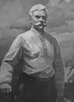
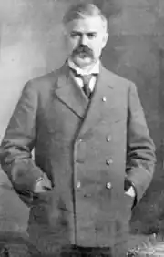

ШАПОВАЛ (СРІБЛЯНСЬКИЙ) МИКИТА ЮХИМОВИЧ
1882 (8.06) — 1932 (25.11)
МИКИТА ШАПОВАЛ—ВЕЛЕТЕНЬ ІЗ ДОНБАСУ Уривки із літературно-краєзначої праці В.Т.Терещенка РОДИНА Народився Микита другим сином у Юхима і Наталії Шаповалів. Батьки землі не мали по спадщині; сім'я жила у хатині діда Олексія та баби Горпини Шаповалів. Дід Олексій, як кріпак, прослужив у солдатах 25 років; після реформи 1861 року землі через це не отримав і попав в категорію "государственных крестьян". За роки служби освоїв грамоту. Баба Горпина (дівоче прізвище не відоме), як і дід, була з кріпаків. Батька Юхима грамоті навчив вдома дід Олексій, а більше навчився на військовій службі, що дало змогу йому дослужитися до унтер-офіцера. Російська армія впродовж кількох століть була сильною унтер-офіцерськими кадрами. Як свідчать військове — історичні дослідники, таких унтер-офіцерів не було в будь-яких збройних силах європейських країн і навіть в Германії. На унтер-офіцерах тримались внутрішня служба, порядок, дисципліна, навчання молодих солдатів, безпосереднє ведіння бою. Унтер-офіцери в більшості своїй командували взводами, бо молоді підпоручики призначались зразу командирами рот. Унтер-офіцерів а російській армії готували без поспіху, зважено і надійно як в мирний час, так і під час ведення війни. Відбирали кандидатів в унтер-офіцери найбільш кмітливих, фізично розвинутих, рішучих, інколи напівграмотних рекрутів з сіл, в більшості своїй з українців. В навчальних командах, крім військової справи, викладались загальноосвітні предмети, що сприяло підвищенню освіченості. Півроку навчання, екзамени, позитивні результати по службі — і молод— , ший військовий командир, унтер-офіцер, готовий. Енергійні, старанні і вимогливі на військовій службі унтер-офіцери такими, в основній масі, були і після демобілізації. Повернувшись в село з організаторським досвідом, вчорашні унтер-офіцери, добрі господарники і робітники, швидко досягали успіху, виділяючись із загального сільського гурту не тільки своєю роботою, а й культурою. За порадою до них йшли прості люди, їх вагоме слово позитивно сприймалось сільським старостою і урядником. В роки російсько-турецької війни 1876-1877р. Юхим Олексійович воював у Болгарії, за що отримав царську медаль. З дитинства батько й мати наймитували, щоб звести кінці з кінцями. Після служби Юхим на "прості роботи" вже не наймався, а мірошникував по окрузі — Сріблянка, Званівка, Кремінна. Міг Юхим і сокирою майструвати: "кому хату зрубати" чи щось інше. З кожним роком сім'я зростала, жити було в дідівській хаті тісно і голодно. Мірошникування і теслярства не вистачало, щоб кінці звести з кінцями. З цих причин Юхим Олексійович подався до тестя в Кремінну, на шахти. Денні заробітки у шахтаря були не такі й великі — 60 копійок, та сім'я вже не голодувала. Сім'я у Юхима та Наталі впродовж 20 років, як вони побрались в 1880 році, зросла на 9 чоловік від народження первістка Охріма до 1900 року — народження Єлизавети, єдиної доньки. За Микитою народився Дорош (1883р.), який продовжив селянський рід, працюючи хліборобом в Слов'яносербському повіті на Луганщині. Перші спроби шкільного навчання Микити відносяться до періоду тимчасового мешкання сім'ї Шаповалів у селі Званівка восени 1887 року. Про цю спробу він згадував не без гумору: "...мене віддали в школу, але після кількох день перебування в ній — утік з неї, бо нічого не розумів і не вмів прочитати слово "солома". "З боєм" був знову приведений до школи, але не увійшов у неї, простоявши біля тину півдня, вхопившись за коляку, од якої не могли мене оді рвати ніякі сили. Не допомогли ні бійка, ні впрошування". У великої людини і перші шкільні кроки були незвичні. Не сприйнявши спершу шкільних порядків, малий Микита вдався до нестандартного оволодіння грамотою, бо жадоба до знань взяла верх. Самотужки Микита навчився грамоті вечорами у званівського шевця. Про це він згадує: " Тієї зими "сам" навчився читати, бігаючи вечорами до шевця, який учив своїх дітей' грамоті..." Решту півзими і весни Микита вчився в церковнопарафіяльної школі слободи Кремінна, куди переїхала сім'я. Після повернення до Сріблянки бігав до місцевої школи. В 1891 році, коли Шаповали проживали в Долинівці, Микита з братом Дорошем відвідував школу на ст. Варваропілля, за 4 версти. Восени 1892 року брати стали учнями Петро-Мар'ївської народної школи. З похвальним листом через два роки закінчив школу Микита, одержавши в нагороду твори М.В.Ломоносова з побажанням шкільного начальства: "Інспектор шкіл Лепетюк казав: "Бажаю тобі бути Ломоносовим". Книгочитання зайняло весь вільний час школяра: Лєрмонтов, Гончаров, Діккенс, М. Рід, Ж. Верн. Не все було підлітку зрозуміло, але розвивало мислення і світогляд. На зиму (1894р.) батько знову подався на шахти і забрав з собою Микиту та Дорофія, які теж працювали поденно — вибирали породу з вугілля. Конторщики помітили старанного і розумного хлопця і в 1896 році взяли Микиту до контори хлопцем на побігеньках "за 3 рублі в місяць". Шахтне виробництво несло передові технології в суспільство —нові підйомні машини, електрику. Монтер-електрик Клюге був дуже популярним серед юнаків шахтарського селища. Микита з братами теж мріяв стати монтером. "У вересні 1896 року приїхав з слободи Комишувахи до Кривка родич його жінки (Нейман), який мені розповів, що в Комишувасі є школа, в якій вчаться такі, що вже скінчили народну школу. На другий день вертався додому, я упрохав його на шляху підвезти мене до Комишувахи". Микиті довелося складати вступні іспити в 4 клас двокласної школи Міністерства народної освіти. За навчання батьки платили 4 рублі на місяць, жив Микита у місцевих жителів Гудковського і у баби Удодихи. Директором (управителем) школи працював Аристарх Колтуновський, вчителями були федотов і Черкасов. В школі Микита освоїв переплітну справу й інколи заробляв на цьому гроші. Все, що було в шкільній бібліотеці, допитливий хлопець перечитав в першу зиму. В день свого народження 1898 року Микита першим учнем, на відмінно, закінчує школу. За час навчання в школі він полюбляв співати в — церковному хорі і завів багато зшитків "концертних співів", любив співати і народні пісні, яких навчився на вулиці. Хлопцю було вже 16 років, а одягався найбідніше серед учнів, ходив у подарованій старій одежині та рваному взутті. В сім'ї Шаповалів за Дорофеєм народився Микола (1886 р.), Йосип (1888р.), Артем (1890р.), Іван і Олександр. За зароблені на шахті гроші Микиті "справили"піджак, штани, картуз і сорочку. Тепер вже був парубок хоч куди! Жадобу до навчання не змогла втамувати добре оплачувана робота конторщика: "Мені дуже хотілось вчитися. Два шляхи: або в Лисиче у штергерську школу, або в лісову школу". Верх взяла родинна професія-лісовод. Крім Микити, найбільш відома біографія Миколи Шаповала. Микола Юхимович народився в 1886 році в селі Сріблянка. Після закінчення Петро-МарІ'вської народної школи теж навчався в двокласній школі села Комишуваха. Вчився так само на одні п'яті рки, як і старший брат Микита, що дало йому змогу закінчити з часом гімназію і філологічний факультет Київського університету. Призов до царської армії освіченим хлопцем проходив через юнкерське училище. В 1910 році Микола по закінченні Чугуївського юнкерського піхотного училища отримав офіцерське звання підпоручик. У званні поручика Микола зі своєю ротою відправляється на фронт першої світової війни. Тяжко поранений (1916 рік), був взятий у полон німцями. В Райштадтському таборі військовополонених Микола Юхимович організовує підпільне культурно-освітнє товариство "СІЧ" для полонених українців. У Відні, створений передовою українською інтелігенцією Союз Визволення України, зумів позитивно вплинути на австро-німецьке військове командування, що призвело в березні 1917 року до відправки на окупо— • вану німцями Волинь групи "січовиків" на чолі з Миколою Шаповалом. Березнева українська революція для полонених "січовиків" була ковтком чистої води в подальших активних освітніх діях. Микола Шаповал, який мав досвід сільського вчителя, після закінчення університету, за декілька місяців організував роботу більше сотні українських шкіл, залучивши до навчання 7 тисяч дітей. Його організаторські здібності сягали далі шкіл — розпочато видання щотижневого українського журналу "Рідне слово", друкування шкільних підручників та українського календаря на 1918 рік. Такий різносторонній діяч не міг залишитись поза увагою Центральної Ради. Восени 1917 року Микола призначається командиром 18 Стародубівського полку. На чолі цього полку Микола Шаповал розділив трагізм бою з червоними військами Муравйова під Київом. Взимку 1918 року Микола Юхимович активно бере участь у формуванні української козацької дивізії. На чолі полку ім. Шевченка (1200 багнетів) він організовує необхідні дії по забезпеченню правопорядку в Київі, але німецькі війська, згідно з умовами Брестського миру, роззброїли і розформували полк. За часів гетьманщини, працюючи управлінцем на залізниці (станція Умань) серед вчорашніх військових, Микола Юхимович в підтримку дій Українського Національного Союзу, очолюваного В. Винниченком та його братом Микитою Юхимовичем, підпільно формує військовий підрозділ для проведення повстання проти П. Скоропадського. Після приходу до влади Директорії Микола Юхимович очолює 7 дивізію Армії Української Народної Республіки, а згодом військову школу старшин української армії у місті Кам'янець-Подільський. Курсантом цієї школи був і Володимир Сосюра. Активність, як особи Миколи Юхимовича і активність поета-початківця Сосюри, не виключає їх особистого знайомства. Після повалення Української Народної Республіки Микола Юхимович з військами перебував у польських інтернованих таборах. Через деякий йому вдалося покинути Польщу і поселитися у Подєбрадах. Тут він а усьому по-генеральськи допомагає своєму братові. В українській емігрантській громаді в Чехословакії авторитет братів був беззаперечний, про що свідчать спогади багатьох видатних українців. Створена Микитою Юхимовичем Українська Громада в Подєбрадах" організаційно зміцнила молодшого брата Миколу. Він згодом, в 1929 році, очолив її керівництво.